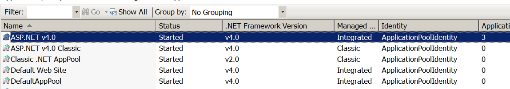
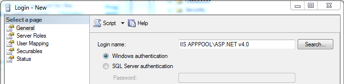

Login failed for user 'IIS APPPOOL\ASP.NET v4.0'
I have a web project (C# Asp.Net, EF 4, MS SQL 2008 and IIS 7) and I need to migrate it to IIS 7 locally (at the moment works fine with CASSINI).
Locally in IIS I have my Default Web Site with my deploy. Both my deploy and
Default Web Site are on pool ASP.NET v4.0 (look image for settings) the pool
target Framework 4 as my web project.  When
visiting the site, the browser does not show the page and allow the browser to
download the page instead.
I have other projects running on IIS locally and they work with no problems (but they do not use Entity Framework).
Using the Event Logger I see errors as below:
Exception information: Exception type: EntityException Exception message: The underlying provider failed on Open. at System.Data.EntityClient.EntityConnection.OpenStoreConnectionIf(Boolean openCondition, DbConnection storeConnectionToOpen, DbConnection originalConnection, String exceptionCode, String attemptedOperation, Boolean& closeStoreConnectionOnFailure) Login failed for user 'IIS APPPOOL\ASP.NET v4.0'. at System.Data.ProviderBase.DbConnectionPool.GetConnection(DbConnection owningObject) at System.Data.ProviderBase.DbConnectionFactory.GetConnection(DbConnection owningConnection) at System.Data.ProviderBase.DbConnectionClosed.OpenConnection(DbConnection outerConnection, DbConnectionFactory connectionFactory) at System.Data.SqlClient.SqlConnection.Open() at System.Data.EntityClient.EntityConnection.OpenStoreConnectionIf(Boolean openCondition, DbConnection storeConnectionToOpen, DbConnection originalConnection, String exceptionCode, String attemptedOperation, Boolean& closeStoreConnectionOnFailure)
Related question
UPDATE: You can read in the resources on this question that permissions must be granted on MS SQL 2008 manually as arift explain in his answer. Using IIS 7.5 and MS SQL 2008 R2, setting manually permission should not be necessary.
Answer
Looks like it's failing trying to open a connection to SQL Server.
You need to add a login to SQL Server for IIS APPPOOL\ASP.NET v4.0 and grant
permissions to the database.
In SSMS, under the server, expand Security, then right click Logins and select "New Login...".
In the New Login dialog, enter the app pool as the login name and click "OK".

You can then right click the login for the app pool, select Properties and
select "User Mapping". Check the appropriate database, and the appropriate
roles. I think you could just select db_datareader and db_datawriter, but
I think you would still need to grant permissions to execute stored procedures
if you do that through EF. You can check the details for the roles here.
Suggest
You can change the ApplicationPoolIdentity from IIS7 -> Application Pools ->
Advanced Settings. 
Under ApplicationPoolIdentity you will find local system. This will make your
application run under NT AUTHORITY\SYSTEM, which is an existing login for
the database by default.
Edit: Before applying this suggestion you should note and understand the security implications.